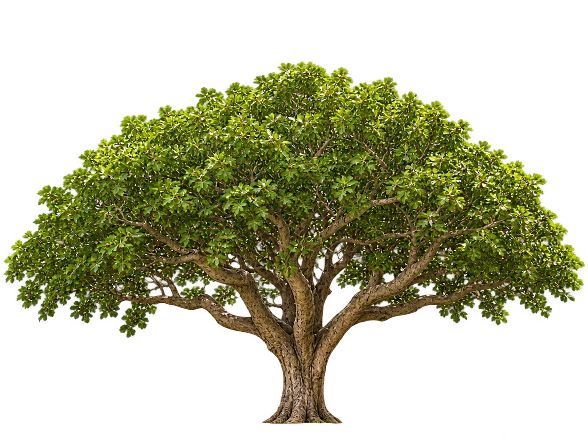

The poplar is vertical: it rises, keeps watch, connects with the sky.

A sign of water, of life.


Мы живём в мире, который несётся слишком быстро. Иногда всё, что нам нужно, чтобы закончить ту книгу, подготовить большой проект, учиться без перерывов или просто снова обрести себя, — это время и тишина.
Ассоциация Amics de la Natura открывает двери места, созданного для сосредоточенности и благополучия посреди природы. Пять уютных отдельных апартаментов (один из них полностью доступен для людей с инвалидностью) в спокойном пейзаже Орты-де-Льейда, где закатный свет и ритм земли задают темп.
Если вы художник в поисках вдохновения, готовитесь к экзаменам, пишете первые страницы истории или просто нуждаетесь в нескольких днях покоя и отдыха от всего — это ваше место.
Место для отдыха. Передышка для ума. Место, где вам составляет компанию природа.

As on the old medieval roads, the cypresses mark the welcome to Les Vaqueres. Three together on arrival and a fourth a little further on, just as tall, reinforcing the ancient symbol of welcome and hospitality: the promise of a peaceful roof, a plate at the table and a safe shelter for the journey.
Further up rises our Wise Poplar: not the tallest, but the largest and oldest in Catalonia, measured at its trunk one metre thirty-five above the ground, as Martí Boada himself confirmed. It is the patriarch of the Horta, the silent, wise lookout that guards the peace of this place.
In the shelter of the house, the hundred-year-old fig tree awaits us. If the poplar protects with its size and memory, the fig tree welcomes from up close: with its long bench and the door open to the shared kitchen, it offers the intimate shade where conversations flow and time stands still.
The poplar and the fig tree are two attitudes towards the world that complement each other.
The poplar is vertical: it rises, keeps watch, connects with the sky.
A sign of water, of life.
The fig tree is horizontal: it opens its arms, gives shade, invites you to sit.

A symbol of fertility, abundance and wisdom.
There is continuity.
They complement each other. It is almost a story.